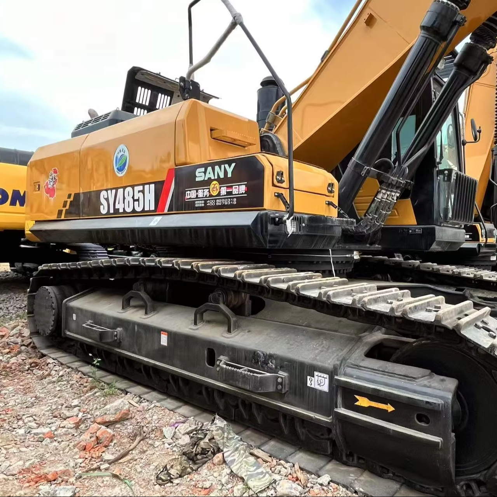

Refurbished SANY SY485 Excavator
The SANY SY485 Excavator is a high-performance, large hydraulic crawler machine designed to tackle heavy-duty tasks in demanding environments. Whether you are involved in construction, mining, or large-scale demolition, the SY485 is built to provide superior power, fuel efficiency, and durability. Known for its excellent hydraulics, powerful engine, and user-friendly design, this excavator excels in handling tough workloads while offering exceptional fuel economy and a comfortable working environment.
Honestly, it's almost impossible to buy a brand new excavator from China. They either don't exist or are made in China. If a Chinese seller tells you their Caterpillar/Komatsu/Volvo/Kobelco/Hitachi is brand new, they're lying. Therefore, a refurbished excavator is your best bet.

Opting for a refurbished SANY SY485 Excavator provides the same high-quality performance as a new model at a fraction of the price. Fully reconditioned with genuine parts and a thorough inspection process, refurbished models deliver the reliability and performance you expect from SANY while offering substantial cost savings.
Here are the detailed specifications for a refurbished SANY SY485H excavator:
Operating Weight and Dimensions
- Operating Weight: ~48,000–50,000 kg
- Transport Length: ~12.0 meters
- Transport Width: ~3.8 meters
- Transport Height: ~3.6 meters
- Tail Swing Radius: ~4.0 meters
- Track Width: ~600–800 mm standard
- Undercarriage: Heavy-duty, reinforced for mining and quarry applications
Engine and Powertrain
- Engine Model: Isuzu 6WG1X
- 6-cylinder, 4-stroke, turbocharged, intercooled, water-cooled
- Displacement: 15.681 liters
- Rated Power Output: 310 kW (415 hp) @ 1,800 rpm
- Maximum Torque: ~2,050 N·m
- Fuel Tank Capacity: ~650 liters
- Travel Speed: ~5.0 km/h
- Swing Speed: ~9.0 rpm
Hydraulic System
- Main Pump Type: Electronically controlled axial piston pumps
- Pump Displacement: ~240 cc
- System Pressure: Up to 34.3 MPa
- Hydraulic Oil Capacity: ~550 liters
- Efficiency Features:
- Load-sensing flow distribution
- Regeneration circuits
- Oversized valve cores for reduced pressure loss
Performance Metrics
- Bucket Capacity:
- Standard: 2.5–3.2 m³
- Optional: 3.8 m³ heavy-duty bucket
- Max Digging Depth: ~7.5–8.0 meters
- Max Reach (Horizontal): ~12.0–12.5 meters
- Max Dump Height: ~7.5–8.0 meters
- Bucket Digging Force: ~290–300 kN
- Arm Digging Force: ~220–230 kN
Cab and Operator Features
- Cab Type: Reinforced ROPS/FOPS-certified cab
- Display: Intelligent LCD monitor with diagnostics and fuel tracking
- Controls: Pilot-operated joysticks with auxiliary hydraulic circuit
- Comfort: Air-suspension seat, HVAC, noise insulation
- Visibility: Wide glass area, LED work lights, optional camera system
Attachments Compatibility
- Standard Bucket: 3.2 m³
- Optional Tools: Rock breaker, demolition shear, ripper, compactor
- Quick Coupler: Heavy-duty hydraulic coupler
- Bucket Series: Configurable for granite, gravel, and mining conditions
Refurbishment Scope
Refurbished SY485 units typically include:
- Engine Overhaul: Turbocharger, injectors, cooling system
- Hydraulic Restoration: Pump recalibration, valve block testing, hose replacement
- Electrical Diagnostics: Monitor, sensors, wiring harness
- Cab Reconditioning: Seat, joysticks, HVAC, repainting
- Structural Repairs: Boom/bucket welding, bushing replacement, undercarriage rebuild
Overview of the SANY SY485 Excavator
The SANY SY485 is a large hydraulic excavator designed for demanding earthmoving, mining, and construction applications. It combines a powerful engine, advanced hydraulic system, and excellent lifting capacity to ensure high productivity on large-scale projects. Whether you need to dig deep trenches, lift heavy materials, or perform demolition work, the SY485 is up to the task. Refurbished units undergo a comprehensive reconditioning process, which includes replacing worn-out parts with genuine SANY components, ensuring reliability and durability while providing cost savings compared to purchasing a new unit.
Key Specifications of the SANY SY485 Excavator
The SANY SY485 Excavator is engineered for heavy-duty tasks, offering a high degree of performance and versatility. Here are the key specifications that make the SY485 ideal for large-scale operations:
-
Operating Weight: Approximately 48,500 kg (106,000 lbs)
-
Engine Power: 375 hp (280 kW)
-
Max Digging Depth: Up to 7.9 meters (25.9 feet)
-
Maximum Reach: 11.5 meters (37.7 feet)
-
Bucket Capacity: Typically 2.0 - 2.5 cubic meters (70.6 - 88.2 cubic feet)
-
Fuel Tank Capacity: Around 500 liters (132 gallons)
-
Travel Speed: Up to 5.3 km/h (3.3 mph)
These specifications give the SY485 the capacity to handle large excavation tasks, heavy lifting, and material handling, making it a powerful tool for construction, mining, and earthmoving projects.
Performance and Efficiency of the SY485
The SANY SY485 is designed to offer outstanding performance while maximizing fuel efficiency. Its powerful engine and advanced hydraulic system ensure smooth operation, quick cycle times, and high productivity, making it an excellent choice for large-scale applications that demand power and efficiency.
Performance Highlights:
-
Powerful Hydraulic System: The SY485 is equipped with an advanced hydraulic system that offers exceptional control, allowing operators to work with precision. Whether digging, lifting, or moving materials, the hydraulic system ensures faster cycle times, improved fuel efficiency, and superior lifting capabilities.
-
Fuel Efficiency: One of the standout features of the SY485 is its fuel-efficient engine. Designed to reduce fuel consumption without sacrificing performance, the SY485 helps businesses lower their operational costs while maintaining high productivity.
-
High Lifting Capacity: With its powerful engine and hydraulic system, the SY485 excels in heavy lifting tasks. Whether you're lifting heavy materials or working in challenging conditions, the SY485 can handle the job with ease and efficiency.
-
Precision Control: The SY485 offers precise control for operators, making it easier to work in confined spaces or perform intricate tasks. The responsive control system ensures that operators can carry out tasks with accuracy and confidence.
Durability and Longevity of the SY485
The SANY SY485 is built for durability, designed to withstand the demands of heavy-duty tasks over an extended period. SANY is known for manufacturing reliable equipment, and the SY485 is no exception. Its robust construction and high-quality components ensure long-term performance and minimal downtime.
Durability Features:
-
Reinforced Undercarriage: The undercarriage of the SY485 is designed to handle heavy workloads and rough terrain. The durable tracks, sprockets, and rollers provide stability, ensuring smooth operation on uneven ground and improving the machine’s overall durability.
-
Long-Lasting Engine: The SY485 is powered by a high-performance engine that is engineered for long-term operation. With proper maintenance, the engine can provide thousands of hours of reliable service, making it a valuable asset for heavy-duty projects.
-
Reliable Hydraulic System: The hydraulic system of the SY485 is designed to perform efficiently under high pressure, offering excellent durability and minimal downtime. The hydraulic components are built to last, ensuring that the excavator remains operational for an extended period.
Comfort and Safety of the SY485
The SANY SY485 Excavator is designed with operator comfort and safety as top priorities. The spacious cabin, ergonomic controls, and advanced safety features make it ideal for long shifts in demanding environments.
Comfort and Safety Features:
-
Spacious and Ergonomic Cabin: The SY485 features a comfortable cabin with adjustable seating and intuitive controls, designed to reduce operator fatigue. The cabin offers excellent visibility, ensuring that operators can maneuver the excavator with ease and safety.
-
Noise and Vibration Reduction: The SY485’s cabin is equipped with noise and vibration-reducing technology to ensure a quieter working environment. This is particularly beneficial for operators working in noisy or challenging environments for extended periods.
-
Safety Features: The SY485 is equipped with Roll Over Protection (ROPS) and Falling Object Protection (FOPS) to safeguard the operator in hazardous work conditions. Its low center of gravity provides additional stability, reducing the risk of tipping during operation on uneven surfaces.
Versatility and Attachments for the SY485
The SANY SY485 is a versatile machine capable of performing a wide variety of tasks across multiple industries. It can be fitted with a range of attachments to meet specific project requirements, such as digging, grading, lifting, or demolition.
Common Attachments for the SY485:
-
Buckets: The SY485 can be fitted with various types of buckets, including general-purpose, heavy-duty, and grading buckets. These are typically in the range of 2.0 - 2.5 cubic meters (70.6 - 88.2 cubic feet), making the excavator ideal for large-scale material handling and excavation tasks.
-
Hydraulic Breakers: For demolition work, the SY485 can be equipped with a hydraulic breaker, allowing the excavator to break through concrete, rock, and other tough materials with ease.
-
Augers: Auger attachments are perfect for drilling deep, narrow holes for foundations, posts, or other applications that require precision.
-
Grapples: Grapples can be used for material handling, allowing the SY485 to lift and move heavy materials such as logs, scrap metal, or debris.
-
Quick Couplers: Quick couplers allow operators to rapidly change between attachments, reducing downtime and improving overall operational efficiency.
Benefits of Purchasing a Refurbished SANY SY485 Excavator
Purchasing a refurbished SANY SY485 Excavator offers several advantages, especially for businesses looking for reliable machinery without the cost of a new unit.
Key Benefits:
-
Cost Savings: Refurbished SANY SY485 units are significantly more affordable than brand-new machines. By opting for a refurbished model, businesses can get the same performance and reliability at a fraction of the cost.
-
Thorough Reconditioning: Each refurbished SY485 undergoes a detailed inspection and reconditioning process, where worn parts are replaced with genuine SANY components, ensuring that the machine operates at peak performance.
-
Warranty: Many refurbished units come with a warranty, providing peace of mind in case of unexpected mechanical issues.
-
Sustainability: Purchasing refurbished equipment is an environmentally friendly choice, helping to reduce waste and extend the life of existing machinery.
Maintenance Tips for the SANY SY485 Excavator
To ensure the SY485 continues to perform at its best, regular maintenance is essential. Below are some important maintenance tips:
Maintenance Recommendations:
-
Engine Maintenance: Regularly check and change the engine oil, replace air filters, and monitor coolant levels to maintain optimal engine performance and prevent overheating.
-
Hydraulic System: Inspect hydraulic hoses for leaks and replace hydraulic filters when necessary. Maintaining the hydraulic system ensures smooth and efficient operation.
-
Undercarriage: Regularly inspect the undercarriage, including tracks, sprockets, and rollers, for signs of wear. Replace any damaged components promptly to avoid further damage.
-
Attachments: Inspect attachments like buckets, grapples, and augers for wear and tear. Regularly replace or repair damaged parts to maintain functionality and prevent downtime.
Conclusion
The SANY SY485 Excavator is a powerful, durable, and versatile machine designed for large-scale construction, mining, and earthmoving projects. With its strong performance, fuel efficiency, and comfortable operator environment, the SY485 is a top choice for heavy-duty applications. A refurbished SY485 offers an affordable solution without sacrificing performance or reliability, making it a smart investment for businesses. With proper maintenance, the SY485 will continue to serve you for many years, providing excellent value and performance for your projects.
Our Commitment
- 2 years / 4000 hours warranty.
- EPA certified.
- No sweatshop labor.
Contacts

- [email protected]
- Youtube Instagram Facebook
- Navigation: G206 (Sishu Bridge) in Changfeng County, Hefei City, Anhui Province, 200 meters north to the east